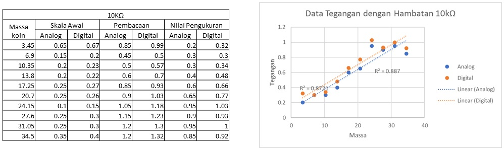
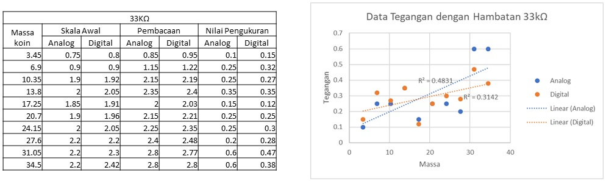
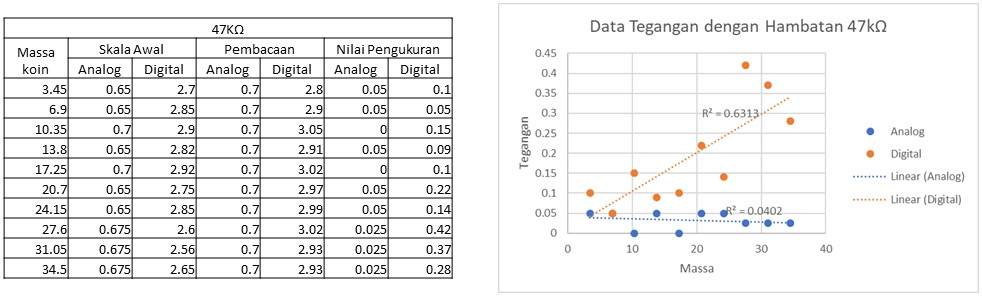

Kelinearan Hasil Pengukuran
Tujuan Praktikum
Mempelajari kelinearan pengukuran berat.
Dasar Teori
Force Sensing Resistor
Force sensing resistor merupakan resistor yang besar hambatannya bergantung pada gaya atau tekanan yang dikenakan ke permukaannya.1 Hal ini dapat terjadi karena resistor ini terdiri dari lapisan-lapisan dengan sifat dan tujuan antar lapisan yang berbeda, sehingga kuat interaksi antar lapisan inilah yang mempengaruhi besar hambatan resistor.
Rangkaian Voltage Divider
Rangkaian Voltage Divider merupakan suatu rangkaian untuk mengurangi tegangan masukan berdasarkan hukum Ohm dan kalang tegangan Kirchoff. Pengurangan tegangan ini sebanding dengan rasio hambatan yang ditinjau dengan hambatan seri total.
Rangkaian Voltage Follower
Rangkaian Voltage Follower merupakan rangkaian yang berfungsi untuk mengurangi arus yang ditarik oleh suatu komponen tanpa mengubah tegangan masukan dan keluaran dari komponen.2
Koefisien Determinasi
Koefisien determinasi adalah koefisien yang memberikan informasi tentang seberapa cocok model yang digunakan untuk merepresentasikan suatu sebaran data. Umumnya koefisien ini memiliki rentang nilai antara 0 hingga 1 (semakin mendekati 1, model semakin cocok), namun nilai diluar rentang tersebut dapat muncul apabila model yang digunakan untuk merepresentasikan sebaran data tersebut lebih buruk daripada suatu garis horizontal (untuk suatu garis pada bidang x-y). 3 Koefisien determinasi sering dilambangkan dengan lambang R2
Data Pengukuran
tabel, grafik, beserta nilai r kuadrat dari pengukuran menggunakan resistor 10k ohm (massa koin dalam gram)
tabel, grafik, beserta nilai r kuadrat dari pengukuran menggunakan resistor 33k ohm (massa koin dalam gram)
tabel, grafik, beserta nilai r kuadrat dari pengukuran menggunakan resistor 47k ohm (massa koin dalam gram)
Pembahasan
Berdasarkan data yang ditampilkan pada grafik, dapat dilihat koefisien determinasi tiap kelompok data, dan dari grafik yang telah ditampilkan, dapat disimpulkan bahwa kelompok data yang paling cocok dengan model yang digunakan adalah kelompok data yang menggunakan resistor 10k ohm. Model yang digunakan adalah model linear, sebab tujuan pengukuran ini adalah untuk mempelajari kelinearan pengukuran berat. Berdasarkan dua pernyataan tersebut, dapat disimpulkan bahwa kelompok data yang menggunakan resistor 10k ohm paling sesuai dengan model linear.
Untuk memastikan bahwa sensor yang digunakan berfungsi sebagaimana mestinya berdasarkan data yang didapat, kita perlu mengetahui karakteristik sensor. Karakteristik ini umumnya dilampirkan pada datasheet sensor. Pada datasheet yang diberikan, dinyatakan bahwa tegangan keluaran akan bertambah apabila gaya yang diberikan dan besar resistor yang digunakan juga bertambah. Selain itu, pada datasheet yang diberikan juga terdapat kurva tegangan keluaran (ordinat) dan gaya (absis), pada kurva tersebut tampak bahwa hubungan antara tegangan keluaran dan gaya yang diberikan adalah hubungan logaritmik.
Jika membandingkan data yang didapat dengan data yang seharusnya didapat pada datasheet, maka terdapat data yang sejalan dan yang tidak sejalan. Data yang sejalan ditunjukkan dengan data yang cenderung bertambah seiring bertambah gaya yang diberikan walaupun dari data yang didapat, terdapat data yang berkurang dari data sebelumnya. Hal ini diduga terjadi akibat adanya steady state error dari sensor. Data yang tidak sejalan ditunjukkan dengan sebaran data yang didapat dan berkurangnya besar tegangan yang dibaca seiring bertambahnya besar resistansi.
Sebaran data yang didapat tampak menunjukkan hubungan linear padahal pada datasheet yang diberikan seharunya hubungannya adalah logaritmik, saya duga hal ini terjadi karena rentang data yang diukur sangat kecil, sehingga hal ini sama saja dengan kita mencuplik bagian yang sangat kecil dari grafik logaritmik sedemikian sehingga yang tercuplik adalah grafik linear. Sedangkan besar tegangan yang berkurang seiring bertambahnya resistansi diduga karena kerusakan dari sensor (dalam praktikum ini, Force Sensing Resistor).
Kesimpulan
Dalam mempelajari kelinearan pengukuran, dapat diketahui seberapa linear sebaran data yang didapat, dengan cara membuat garis regresi linear dan melihat besar koefisien determinasinya. Selain itu kita perlu meninjau apakah benar yang sedang ditinjau adalah suatu data yang linear, dan bukan bagian dari data yang dicuplik, sedemikian sehingga terlihat linear. Hal tersebut perlu diperhatikan baik-baik agar apabila ditinjau rentang pengukuran yang lebih besar dapat dipilih penggunaan model sebaran yang lebih sesuai dengan keadaan sebenarnya.
Daftar Pustaka
-
Elprocus. t.thn. Know all about Force Sensing Resistor Technology . [diakses 24 April 2019] ↩
-
Malvino A.P, Bates D. 2016. Electronic Principles, Eight Edition. McGraw-Hill.USA. ↩
-
Kvalseth, Tarald O. (1985). "Cautionary Note about R2". The American Statistician. 39 (4): 279–285. ↩